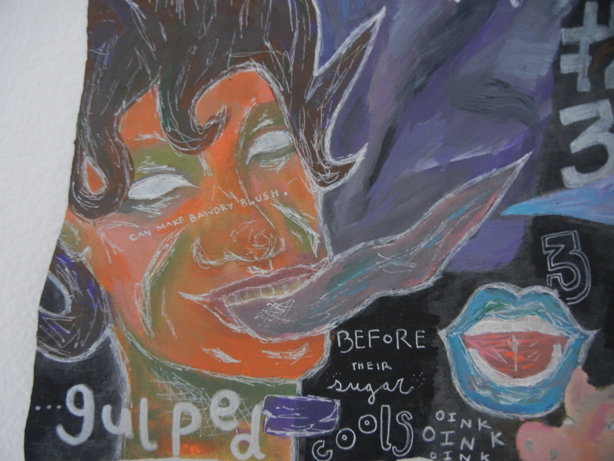
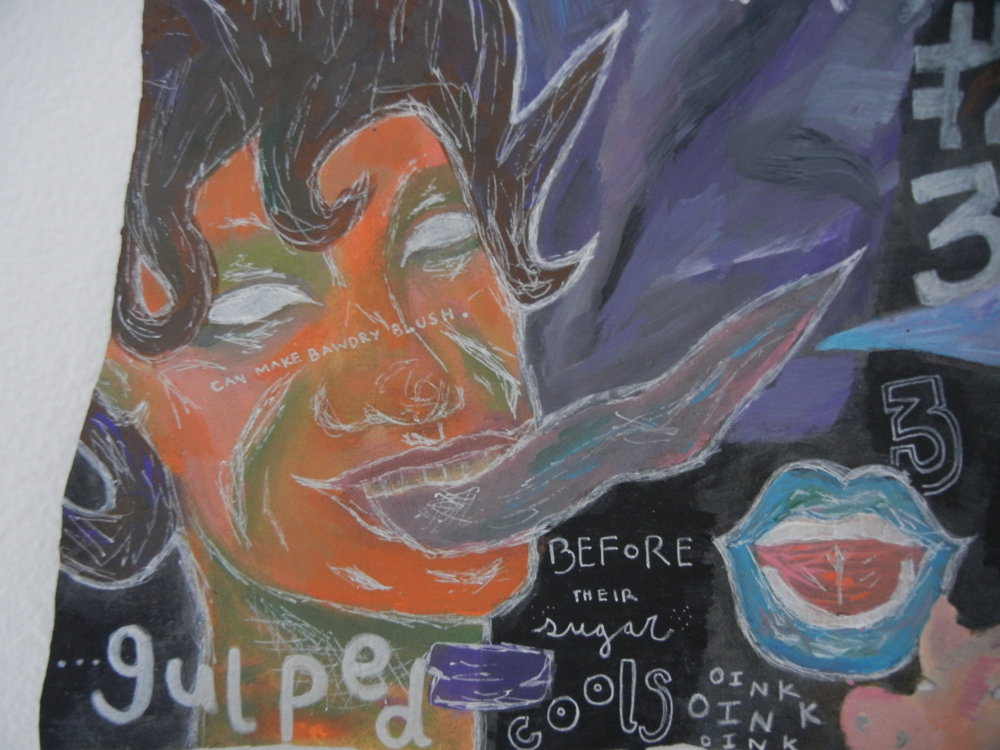

"Bawdry Embraced" is my visual rendition of Ted Hughes' poem, through a femenist lens. Patriarchal standards and norms have haunted and followed women from the beginning of time, and continue to do so now. Women continue to break conservative views of being merely a birth giver, caretaker, and or housewife. This degrading and limiting view of women has been carried and believed through the years in literature and art. Ted Hughes' "Bawdry Embraced" is one example of text that belittles and holds conservative views of women.
The overall vibe of the piece is a bit unwelcoming, disturbing, and chaotic.
There lines in Hughes' poem that refer to women in deragatory contexts, objectify us, and even compare us to pigs. In this artwork, I wanted to show the discord of
Hughe's depiction and description of women and how that connects to women in the present age- how we continue battling sexist steryotypes and how we feel
unsafe and unwelcomed in some environments How we are constantly chased, haunted,
and berated by outdated patriarchal standards.
 
